A multi-module seismic hazard, site characterization, and building exposure study for the Yangon Region, Myanmar, anchored to the M4.2 earthquake event of 22 May 2026.
Ambient-noise HVSR measurements at 14 microzonation sites across Yangon reveal fundamental frequencies of 0.6–1.5 Hz (periods 0.65–1.67 s), consistent with deep alluvial deposits. All 44 analysed townships are classified as NEHRP Site Class E (Very Soft Soil). Ground-motion recordings from the M4.2 event show PGA values of 0.6–101 cm/s² at epicentral distances of 3–25 km. North Okkalapa Township carries the highest composite seismic risk index (SRI = 0.80), driven by elevated hazard amplification and a large building stock.
Horizontal-to-Vertical Spectral Ratio (HVSR) analysis was performed on 25 ambient-noise recordings collected at SP01–SP25 (no SP22) using Raspberry Shake 3-component sensors. 14 sites returned valid results; 11 were excluded due to missing EHZ (vertical) channels. Processing used 30-second Hanning-tapered windows with Konno-Ohmachi smoothing (b = 40) and a transient-rejection threshold (RMS > 4× median discarded).
| Site | Latitude | Longitude | f₀ (Hz) | T₀ (s) | A₀ | Windows | Status |
|---|---|---|---|---|---|---|---|
| SP01 | 16.9301 | 96.1713 | 1.533 | 0.652 | 148.0 ⚠ | 110 | ok |
| SP02 | 16.9459 | 96.1697 | 1.467 | 0.682 | 18.05 | 134 | ok |
| SP03 | 16.9459 | 96.1697 | 0.933 | 1.071 | 9.83 | 138 | ok |
| SP04 | 16.7562 | 96.0918 | — | — | — | 0 | no EHZ |
| SP05 | 16.8450 | 96.1373 | — | — | — | 0 | no EHZ |
| SP06 | 16.8665 | 96.0285 | — | — | — | 0 | no EHZ |
| SP07 | 16.8666 | 96.0285 | — | — | — | 0 | no EHZ |
| SP08 | 16.9014 | 96.1766 | — | — | — | 0 | no EHZ |
| SP09 | 16.9158 | 96.2121 | — | — | — | 0 | no EHZ |
| SP10 | 16.8450 | 96.1759 | 0.633 | 1.579 | 3.38 | 150 | ok |
| SP11 | 16.8586 | 96.2190 | 1.100 | 0.909 | 3.78 | 150 | ok |
| SP12 | 16.8301 | 96.2740 | — | — | — | 0 | no EHZ |
| SP13 | 16.8143 | 96.2109 | 1.133 | 0.882 | 4.82 | 150 | ok |
| SP14 | 16.8004 | 96.1964 | — | — | — | 0 | no EHZ |
| SP15 | 16.7865 | 96.1749 | — | — | — | 0 | no EHZ |
| SP16 | 16.7558 | 96.1572 | — | — | — | 0 | no EHZ |
| SP17 | 16.7520 | 96.2627 | 0.833 | 1.200 | 2.86 | 150 | ok |
| SP18 | 16.8094 | 96.2184 | 0.900 | 1.111 | 5.49 | 150 | ok |
| SP19 | 16.8633 | 96.1356 | 0.767 | 1.304 | 3.79 | 150 | ok |
| SP20 | 16.8078 | 96.1805 | 0.700 | 1.429 | 6.27 | 148 | ok |
| SP21 | 16.8109 | 96.1362 | 0.600 | 1.667 | 4.11 | 150 | ok |
| SP23 | 16.7970 | 96.1226 | 0.967 | 1.034 | 7.59 | 150 | ok |
| SP24 | 16.8128 | 96.1574 | 0.767 | 1.304 | 5.21 | 146 | ok |
| SP25 | 16.8260 | 96.1639 | 0.600 | 1.667 | 4.11 | 150 | ok |
⚠ SP01 A₀ = 148 is anomalously high (expected 2–15); likely instrument-response epoch mismatch for the RDEF5 station at NorthOkkalar. SP02/SP03 share the same MiniSEED file (two deployments at the same location).
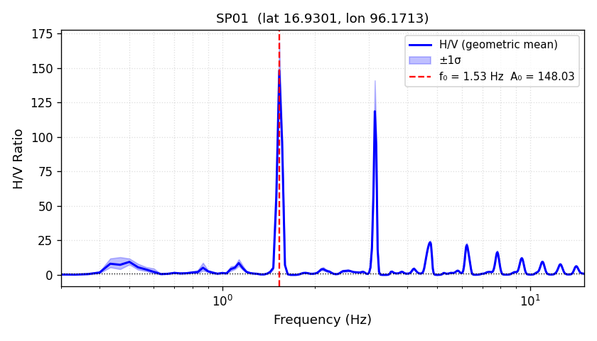
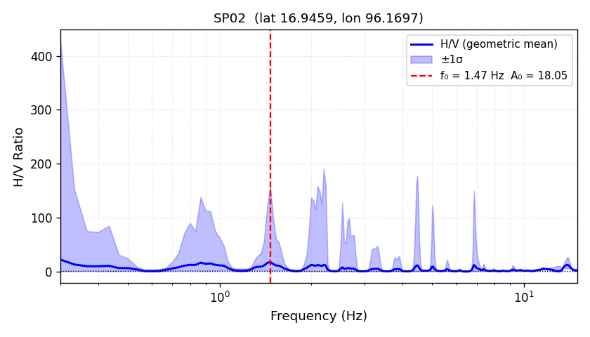
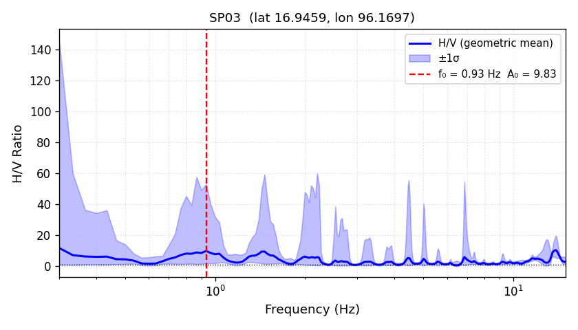
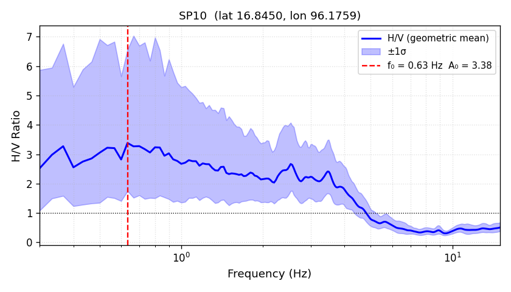
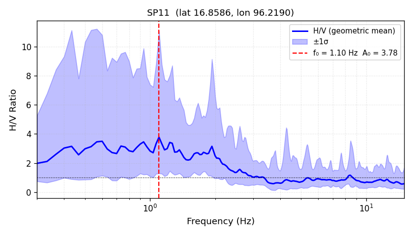
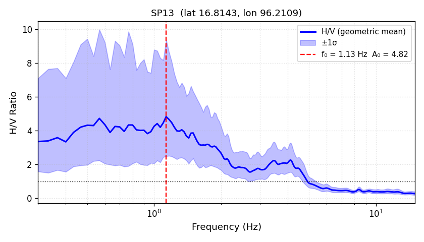
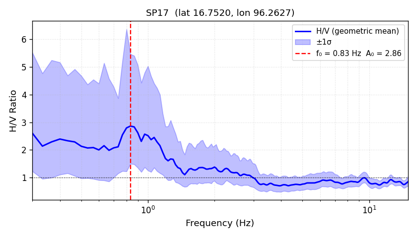
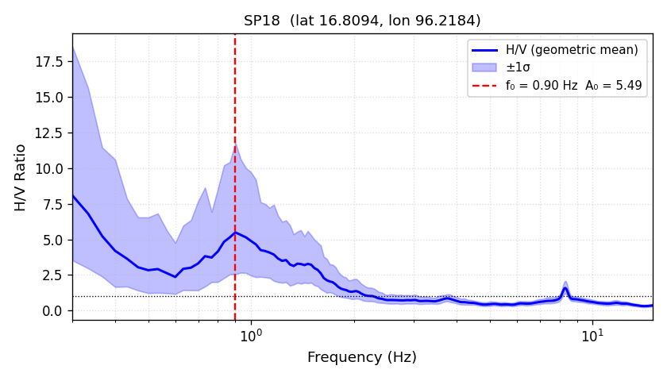
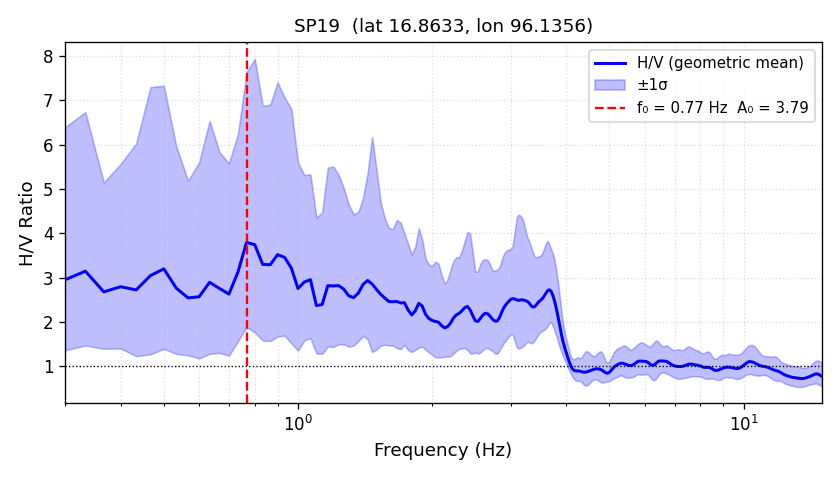
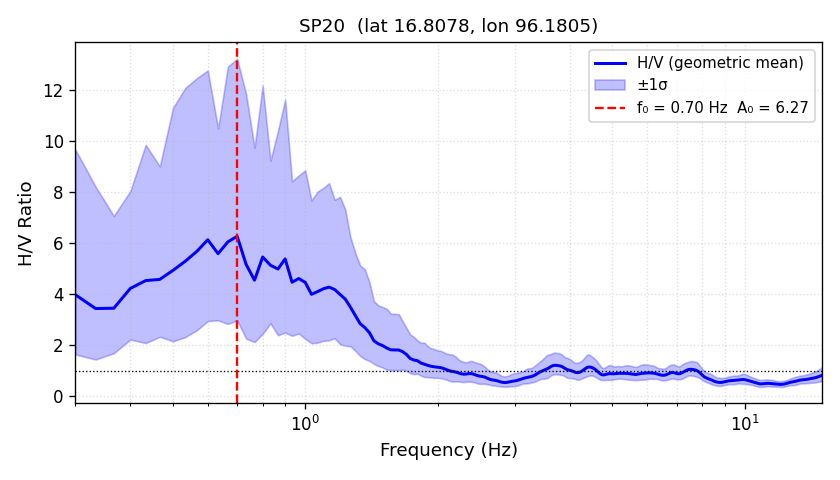
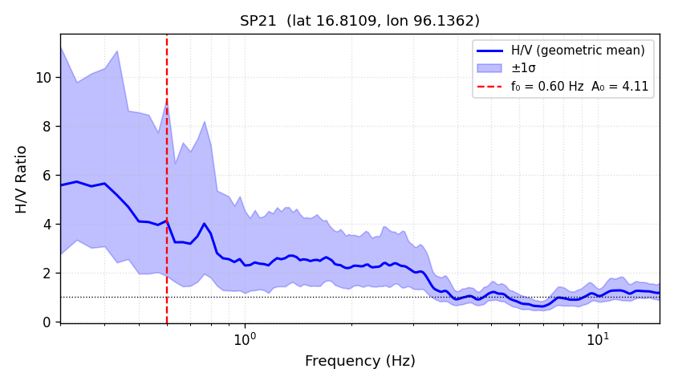
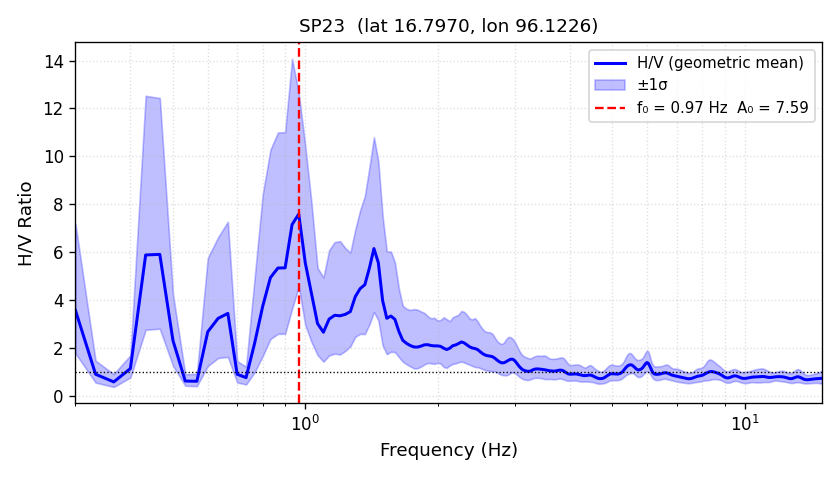
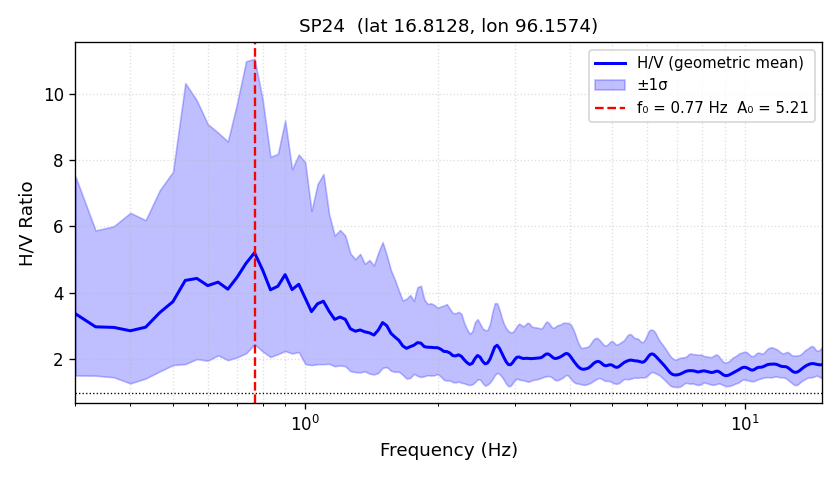
HVSR results from the 14 valid sites were spatially interpolated to a 0.005° grid covering all 44 townships using Ordinary Kriging (linear variogram model) with IDW fallback. Each township was assigned a NEHRP site class based on the interpolated fundamental period T₀. All townships classify as NEHRP Site Class E (Very Soft Soil), reflecting Yangon's deep Holocene alluvial basin.
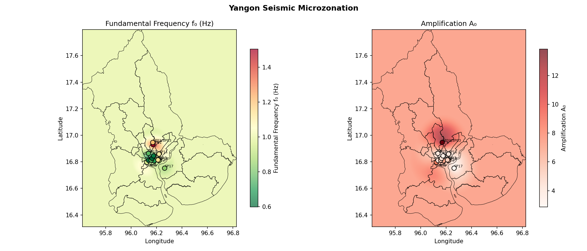
| Township | District | f₀ (Hz) | T₀ (s) | A₀ | NEHRP |
|---|---|---|---|---|---|
| Mingaladon | Yangon (North) | 1.187 | 0.845 | 38.76 | E |
| Insein | Yangon (North) | 0.991 | 1.012 | 28.54 | E |
| Shwepyithar | Yangon (North) | 1.119 | 0.894 | 34.46 | E |
| Hmawbi | Yangon (North) | 1.172 | 0.854 | 34.58 | E |
| North Okkalapa | Yangon (East) | 1.165 | 0.864 | 48.88 | E |
| Dagon Myothit (N) | Yangon (East) | 1.029 | 0.976 | 29.72 | E |
| South Okkalapa | Yangon (East) | 0.848 | 1.182 | 11.33 | E |
| Yankin | Yangon (East) | 0.762 | 1.313 | 7.63 | E |
| Thingangyun | Yangon (East) | 0.886 | 1.132 | 6.79 | E |
| Kamaryut | Yangon (West) | 0.762 | 1.314 | 7.10 | E |
| Sanchaung | Yangon (West) | 0.765 | 1.308 | 5.64 | E |
| Hlaing | Yangon (West) | 0.815 | 1.227 | 11.60 | E |
| Latha | Yangon (West) | 0.782 | 1.279 | 3.45 | E |
| Pabedan | Yangon (West) | 0.782 | 1.278 | 3.21 | E |
| Mayangone | Yangon (West) | 0.859 | 1.170 | 17.21 | E |
| Tamwe | Yangon (East) | 0.768 | 1.302 | 4.73 | E |
| Dawbon | Yangon (East) | 0.851 | 1.175 | 7.63 | E |
| Hlaingtharya (E) | Yangon (North) | 0.903 | 1.111 | 18.45 | E |
| Hlegu | Yangon (North) | 1.241 | 0.806 | 36.11 | E |
| Dagon Myothit (E) | Yangon (East) | 1.188 | 0.843 | 35.92 | E |
Waveform data from the M4.2 Yangon earthquake (22 May 2026) were processed at 6 Raspberry Shake stations in the Yangon metropolitan area. Instrument responses were removed to obtain acceleration time series; PGA, PGV, and Arias Intensity were computed from the horizontal components. Station T9951 was excluded (instrument-response mismatch; physically impossible PGA computed). Event-window detection used STA/LTA (1 s / 10 s); most stations fell back to peak-amplitude detection on the full-day trace.
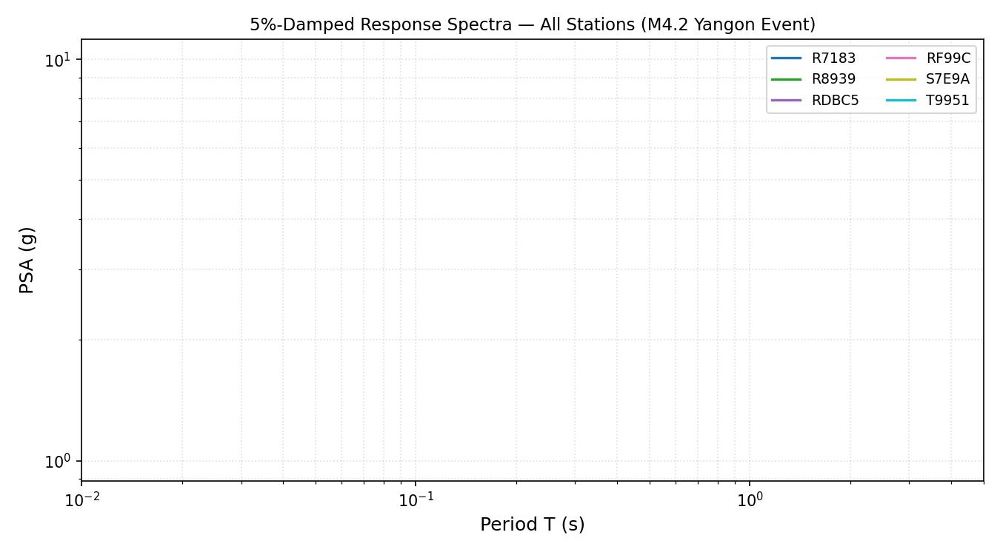
| Station | Lat | Lon | Dist (km) | PGA (cm/s²) | PGV (cm/s) | Ia (m/s) | Event Onset (UTC) | Detection | Note |
|---|---|---|---|---|---|---|---|---|---|
| R7183 | 16.874 | 96.133 | 3.4 | 101.27 | 30.19 | 0.065 | 23:43:47 | STA/LTA | ⚠ Uncertain — late UTC trigger |
| R8939 | 16.802 | 96.135 | 8.2 | 5.70 | 0.030 | 0.000034 | 12:29:42 | Peak-amp | |
| RDBC5 | 16.793 | 96.146 | 8.8 | 1.65 | 0.042 | 0.000043 | 06:29:39 | Peak-amp | |
| RF99C | 16.811 | 96.135 | 7.3 | 0.62 | 0.042 | 0.000035 | 22:17:34 | Peak-amp | |
| S7E9A | 16.667 | 96.262 | 24.9 | 3.73 | 0.060 | 0.000088 | 07:02:07 | STA/LTA | Most reliable trigger |
| T9951 | 16.901 | 96.558 | 42.0 | — excluded — | — | excluded | Response removal failure | ||
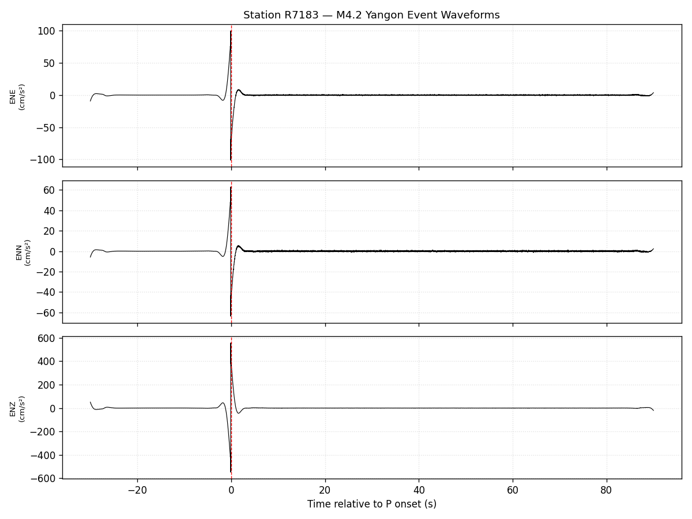
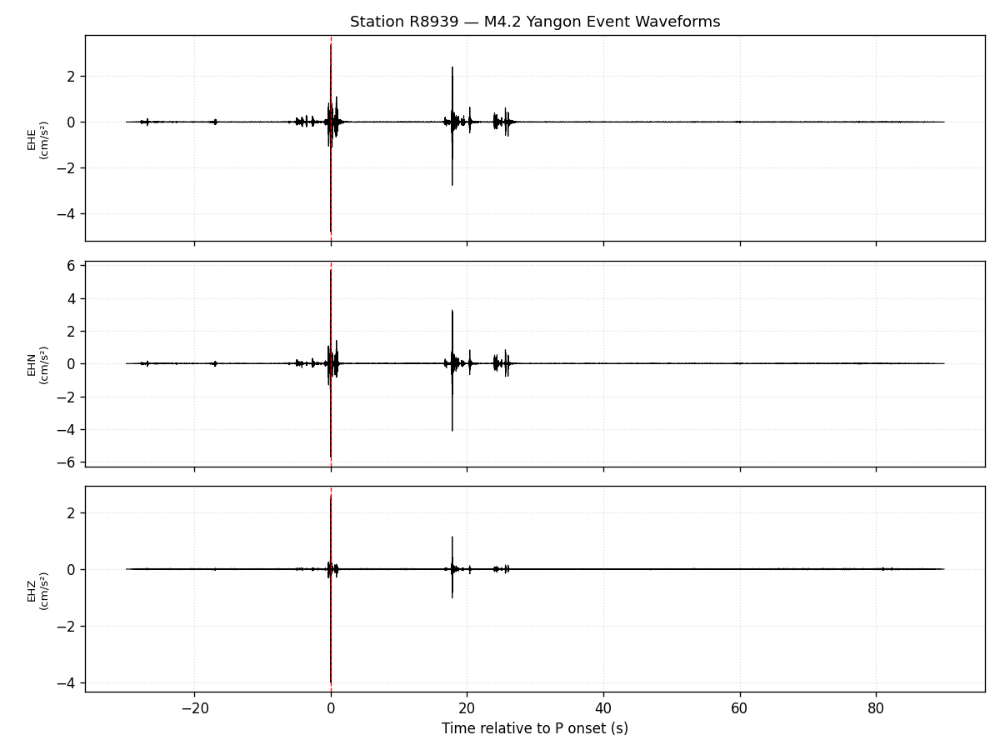
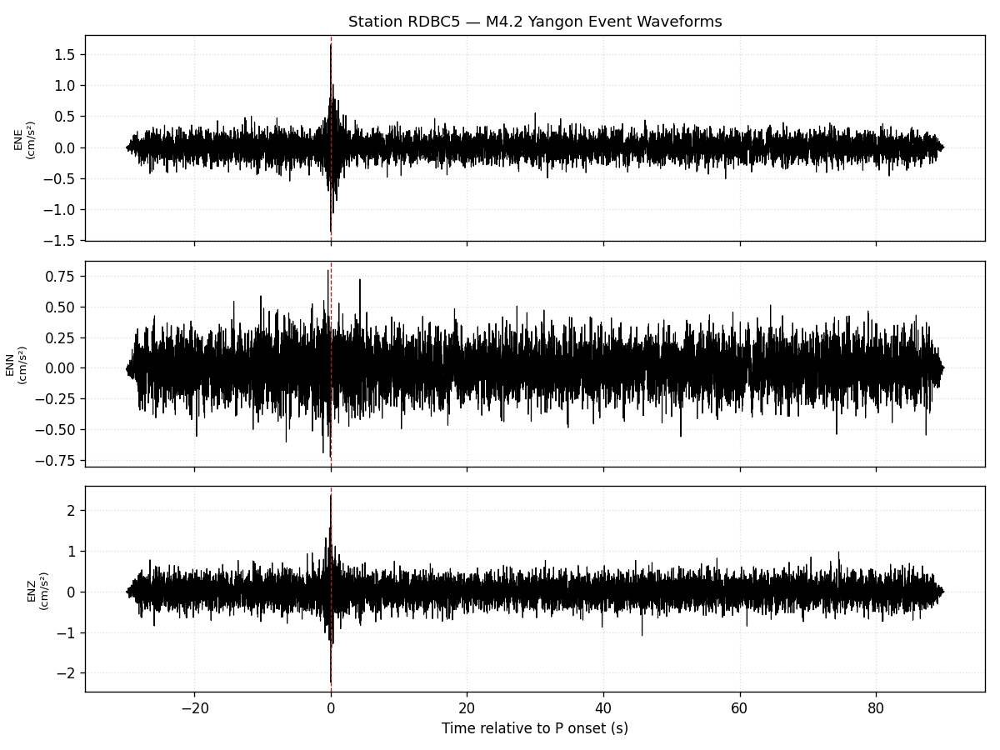
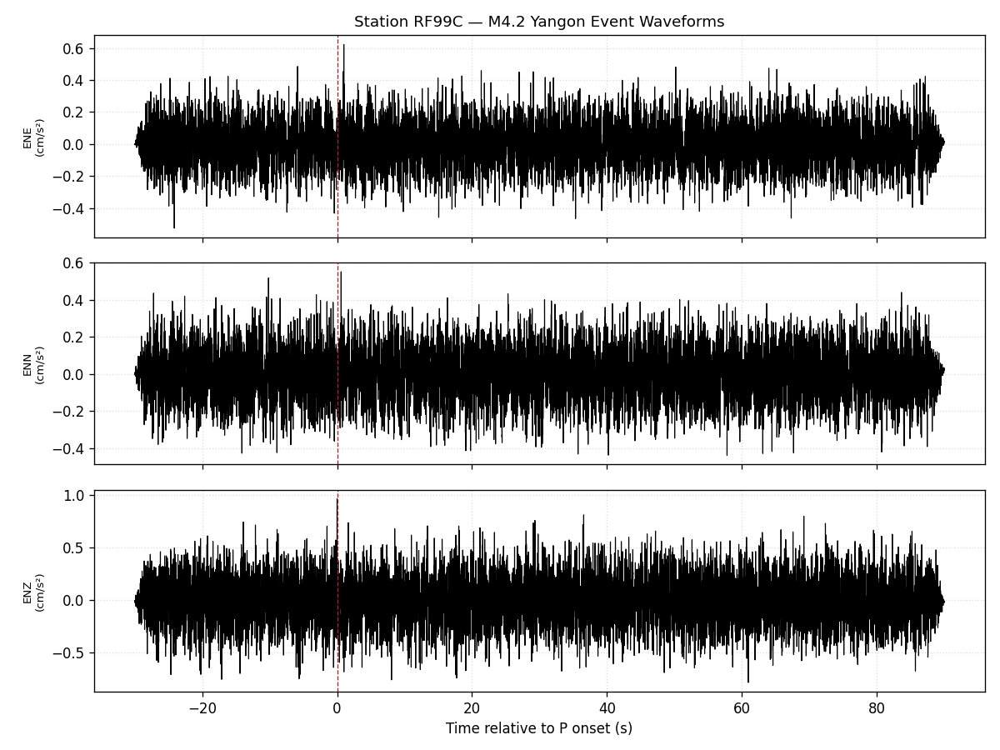
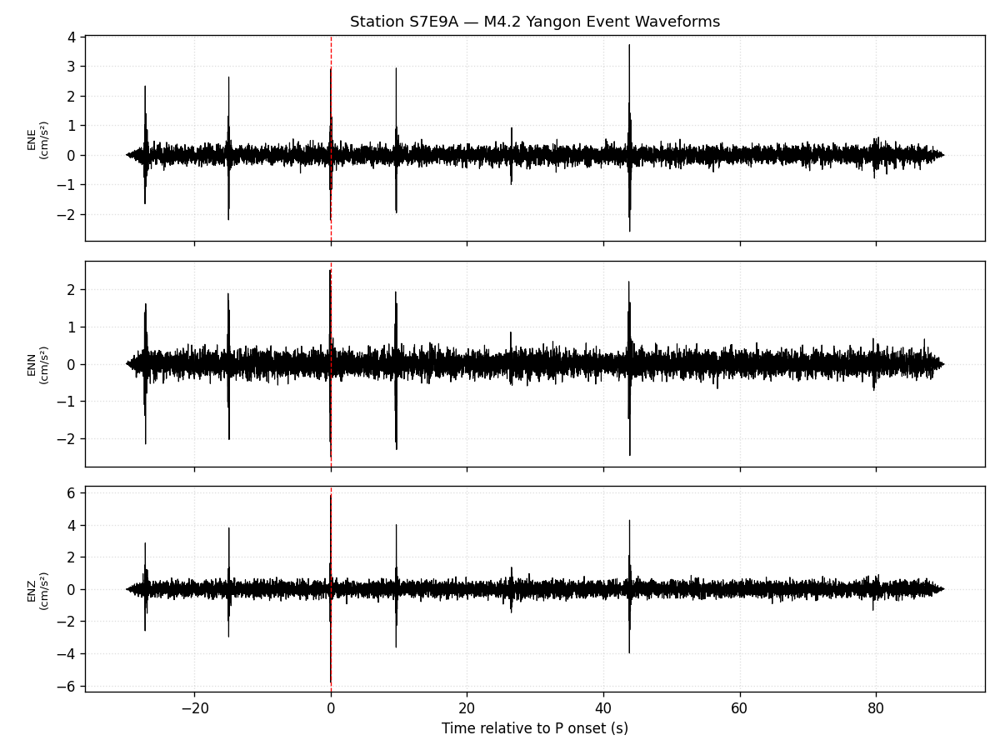
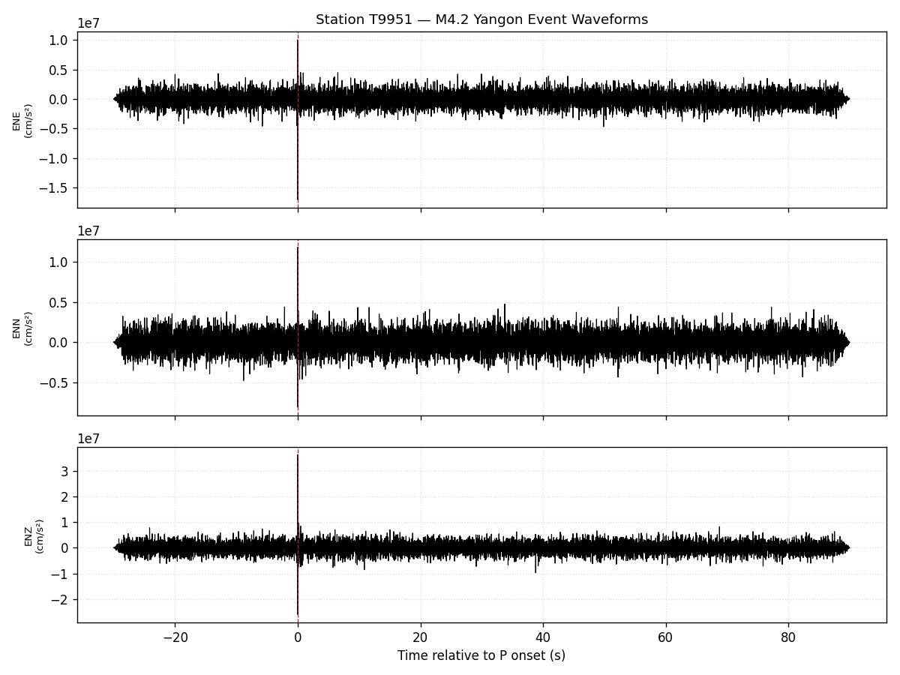
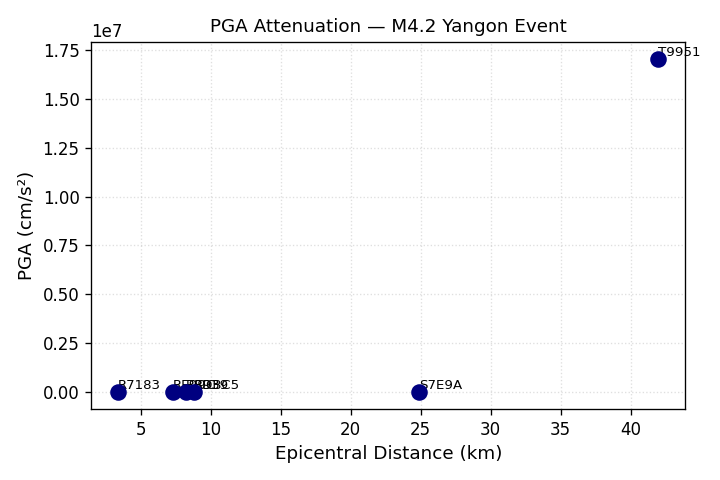
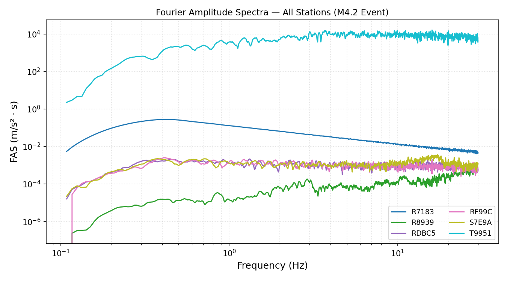
Standard Spectral Ratio (SSR) amplification was computed for each event station using S7E9A as the reference (most distant station, lowest expected site amplification). SSR fundamental frequencies are compared against the nearest HVSR measurement to assess consistency between the ambient-noise and earthquake-based methods.
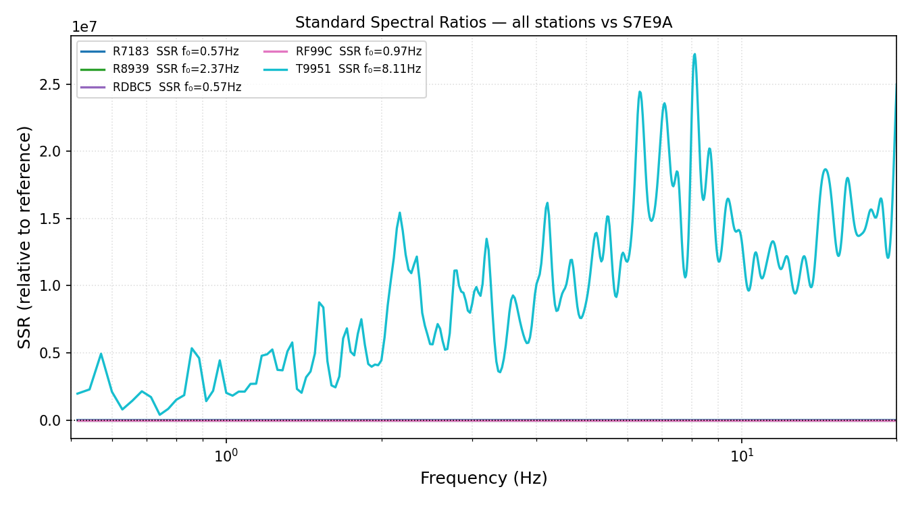
| Station | SSR f₀ (Hz) | SSR A₀ | Nearest HVSR Site | HVSR f₀ (Hz) | HVSR A₀ | Δf₀ | Note |
|---|---|---|---|---|---|---|---|
| R7183 | 0.571 | 324.2 ⚠ | SP19 | 0.767 | 3.79 | 0.195 | High SSR A₀ — suspect (same source issue as R7183 PGA) |
| R8939 | 2.371 | 0.17 | SP21 | 0.600 | 4.11 | 1.771 | SSR f₀ high — possible S-wave resonance or source effect |
| RDBC5 | 0.571 | 3.81 | SP21 | 0.600 | 4.11 | 0.029 | ✓ Good SSR/HVSR agreement (Δf₀ = 0.03 Hz) |
| RF99C | 0.971 | 2.77 | SP21 | 0.600 | 4.11 | 0.371 | Moderate agreement |
| S7E9A | 0.514 | 1.00 | SP17 | 0.833 | 2.86 | 0.319 | Reference station (normalised) |
| T9951 | 8.112 | 2.7×10⁷ ⚠ | SP17 | 0.833 | 2.86 | 7.279 | Excluded — response failure propagated to SSR |
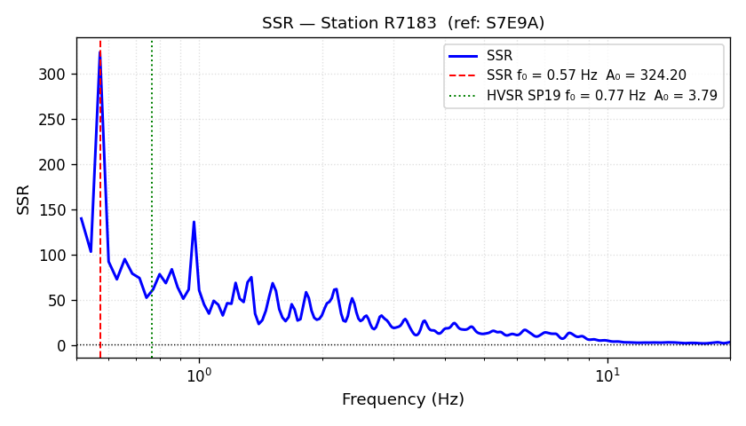
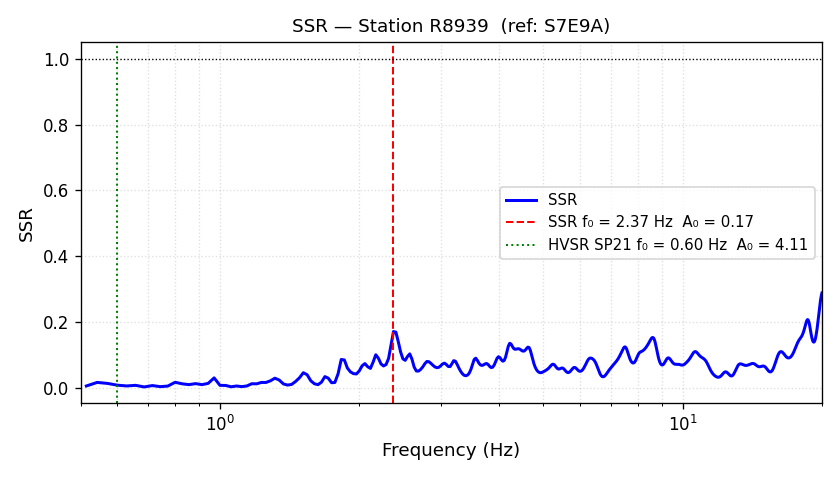
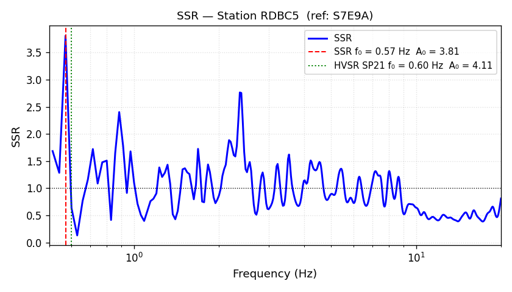
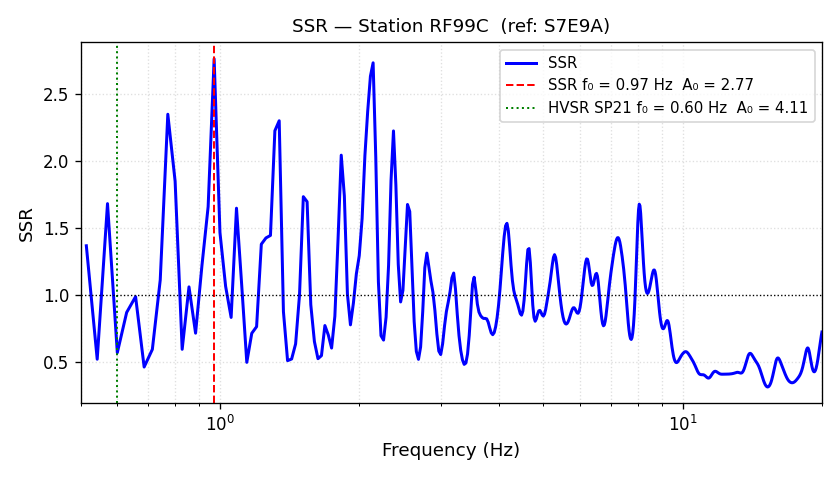
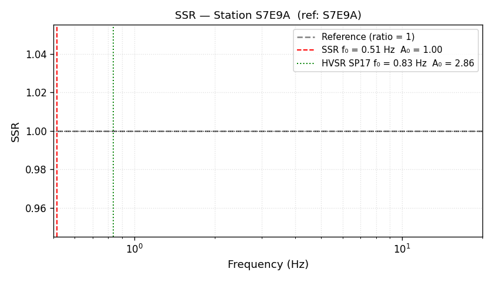
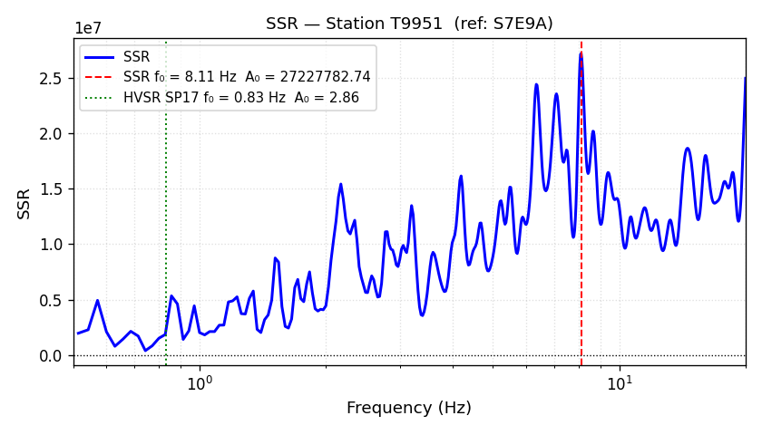
639,318 building footprints from OpenStreetMap-derived data were spatially joined to the 44 township boundaries. Building density, coverage ratio, and footprint statistics were computed per township. A resonance risk proxy was derived by comparing inferred building natural periods (estimated from footprint area) against the site T₀ from Module 2.
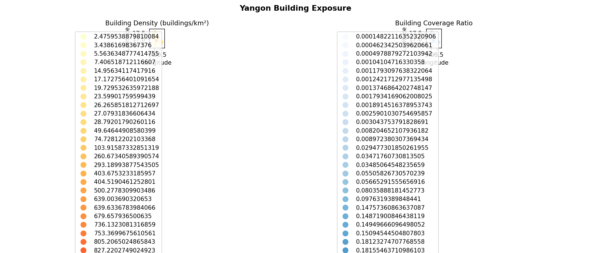
| Township | District | Buildings | Density (bldg/km²) | Coverage Ratio | Resonance Risk |
|---|---|---|---|---|---|
| Latha | Yangon (West) | 1,273 | 2,071 | 0.449 | Low |
| Sanchaung | Yangon (West) | 4,162 | 1,788 | 0.343 | Low |
| South Okkalapa | Yangon (East) | 14,389 | 1,777 | 0.270 | Low |
| Pabedan | Yangon (West) | 936 | 1,585 | 0.477 | Low |
| Dagon Myothit (N) | Yangon (East) | 33,810 | 1,414 | 0.149 | Low |
| North Okkalapa | Yangon (East) | 38,126 | 1,392 | 0.181 | Low |
| Thaketa | Yangon (East) | 17,251 | 1,314 | 0.193 | Low |
| Dawbon | Yangon (East) | 4,227 | 1,298 | 0.244 | Low |
| Yankin | Yangon (East) | 6,133 | 1,245 | 0.227 | Low |
| Tamwe | Yangon (East) | 5,696 | 1,196 | 0.267 | Low |
| Pazundaung | Yangon (West) | 1,259 | 1,136 | 0.321 | Low |
| Kyauktada | Yangon (West) | 818 | 1,131 | 0.401 | Low |
| Thingangyun | Yangon (East) | 14,855 | 1,128 | 0.212 | Low |
| Lanmadaw | Yangon (West) | 1,987 | 1,052 | 0.287 | Low |
| Insein | Yangon (North) | 30,099 | 988 | 0.182 | Low |
| Hlaing | Yangon (West) | 7,408 | 744 | 0.238 | Low |
| Kyeemyindaing | Yangon (West) | 3,037 | 672 | 0.218 | Low |
| Hlaingtharya (E) | Yangon (North) | 23,083 | 639 | 0.151 | Low |
| Mayangone | Yangon (West) | 14,408 | 588 | 0.130 | Low |
| Ahlone | Yangon (West) | 3,756 | 539 | 0.188 | Low |
A composite Seismic Risk Index (SRI) was computed for each township by combining three normalised sub-scores: site hazard (H, weight 0.40), building exposure (E, weight 0.35), and recorded PGA (P, weight 0.25). SRI = 0.40·H + 0.35·E + 0.25·P. All sub-scores were normalised to [0, 1] across the 44-township dataset.
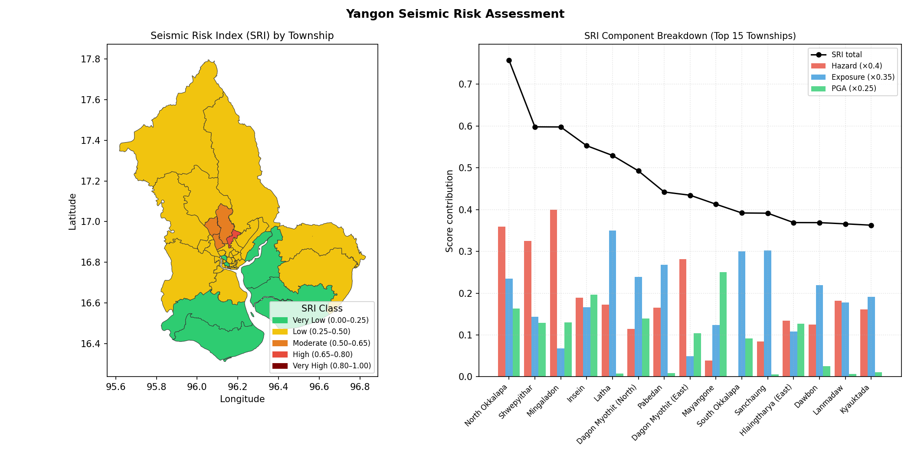
| # | Township | District | Hazard Score | Exposure Score | PGA Score | SRI | Class |
|---|
30-second Hanning-tapered windows; max 150 windows; transient rejection at 4× median RMS(Z). Konno-Ohmachi smoothing b = 40. Geometric mean H/V; f₀ searched 0.5–12 Hz. Instrument response removed with ObsPy (output = VEL, pre_filt = 0.1/0.2/45/50 Hz). 3-stage time-window fallback: stated UTC → local (UTC+6:30) → full recording +30 min.
Ordinary Kriging (PyKrige, linear variogram) on a 0.005° grid. IDW fallback if Kriging fails. NEHRP class assigned from interpolated T₀: T₀ > 0.5 s → Class E (Very Soft).
MiniSEED + StationXML loaded with ObsPy. Channel selection: EHZ + EHE/EHN if available, else EHZ + ENE/ENN. Response removed → acceleration (output = ACC, pre_filt = 0.1/0.2/45/50 Hz, water_level = 60). PGA from geometric mean of horizontal peak absolute acceleration. Arias Intensity via np.trapezoid.
Standard Spectral Ratio vs. S7E9A reference. 5 s pre-signal, 30 s signal window. Konno-Ohmachi smoothing applied to Fourier spectra. f₀ identified as peak of geometric-mean horizontal SSR.
639,318 building footprints (GeoJSON, ~247 MB) projected to UTM Zone 47N, area computed, spatially joined to townships. Density = buildings/km². Coverage = sum(footprint)/township area. Resonance proxy: T_bldg estimated from footprint area.
SRI = 0.40·H + 0.35·E + 0.25·P. Hazard score from normalised mean_A0×f0 product. Exposure score from normalised building density. PGA score from IDW-interpolated station PGA at township centroids, normalised. Classes: Very Low <0.20, Low 0.20–0.45, Moderate 0.45–0.70, High ≥ 0.70.
| Dataset | Source | Coverage | Format |
|---|---|---|---|
| Township Boundaries | MIMU / OCHA Myanmar | 44 townships, Yangon Region (excl. Cocokyun) | GeoJSON, WGS84 |
| Building Footprints | OpenStreetMap (derived) | 639,318 buildings, same 44 townships | GeoJSON, ~247 MB |
| Microzonation Waveforms | Field campaign, Jan–Feb 2026 | 25 sites (SP01–SP25, no SP22), Raspberry Shake 3-comp | MiniSEED + StationXML |
| Earthquake Waveforms | AM Network, 22 May 2026 | 6 stations, M4.2 Yangon event | MiniSEED + StationXML |
Python 3.13 · ObsPy 1.5 · NumPy 2.4 · SciPy 1.17 · GeoPandas 1.1 · Shapely 2.1 · PyKrige 1.7 · Pandas 2.3 · Folium 0.20 · Matplotlib 3.x